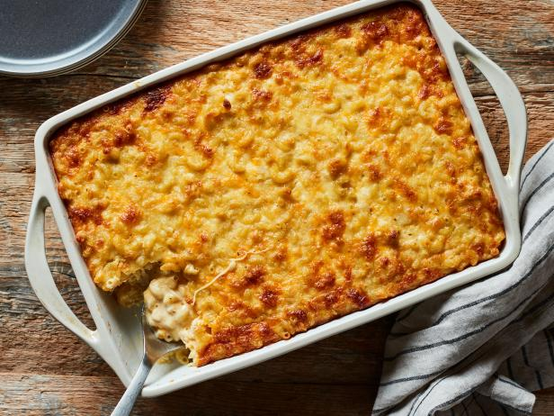

Mac & Cheese

Description
The above image is the final result of this recipe: a freshly baked pan of mac and cheese.
Grab the below ingredients and follow the below steps to make one yourself!
Ingredients:
- Elbow macaroni
- Eggs
- Heavy cream
- Shredded cheddar
- Shredded mozzarella
- Shredded gouda
- Cajun seasoning
Steps:
- Preheat oven to 385 degrees Fahrenheit
- Cook macaroni until 3 minutes less than fully cooked before rinsing under cold water until cooled
- Mix eggs, heavy cream, and cajun seasoning in a medium bowl
- Pour the egg, heavy cream, and cajun seasoning mixture over the cooked pasta and stir to combine
- Toss together the cheddar, mozzarella, and gouda in a large bowl before adding to the pasta
- Transfer the mixture to a 9-by-13-inch baking dish
- Bake until the center of the mac and cheese is set and the top is golden brown or 60-70 minutes, then cool for ~10 minutes